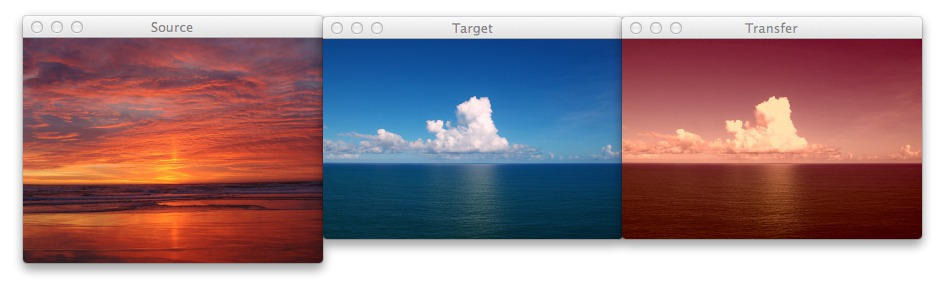

ColorTransfer¶
{kind=link}
Webreference¶
http://www.pyimagesearch.com/2014/06/30/super-fast-color-transfer-images/
https://github.com/jrosebr1/color_transfer
su -
apt-get install python-opencv
pip install color_transfer
exit
git clone https://github.com/jrosebr1/color_transfer.git
Install OpenCV 2.4.11¶
Kubuntu 14.04¶
http://www.samontab.com/web/2014/06/installing-opencv-2-4-9-in-ubuntu-14-04-lts/ (probleme de compilation avec 2.4.9)
https://gist.github.com/dynamicguy/3d1fce8dae65e765f7c4
su
apt-get install build-essential libgtk2.0-dev libjpeg-dev libtiff4-dev libjasper-dev libopenexr-dev cmake python-dev python-numpy python-tk libtbb-dev libeigen3-dev yasm libfaac-dev libopencore-amrnb-dev libopencore-amrwb-dev libtheora-dev libvorbis-dev libxvidcore-dev libx264-dev libqt4-dev libqt4-opengl-dev sphinx-common texlive-latex-extra libv4l-dev libdc1394-22-dev libavcodec-dev libavformat-dev libswscale-dev default-jdk ant libvtk5-qt4-dev
exit
cd ~
wget http://downloads.sourceforge.net/project/opencvlibrary/opencv-unix/2.4.11/opencv-2.4.11.zip
unzip opencv-2.4.11.zip
cd opencv-2.4.11
mkdir build
cd build
cmake -D WITH_TBB=ON -D BUILD_NEW_PYTHON_SUPPORT=ON -D WITH_V4L=ON -D INSTALL_C_EXAMPLES=ON -D INSTALL_PYTHON_EXAMPLES=ON -D BUILD_EXAMPLES=ON -D WITH_QT=ON -D WITH_OPENGL=ON -D WITH_VTK=ON -D CUDA_GENERATION=Auto ..
http://stackoverflow.com/questions/28010399/build-opencv-with-cuda-support